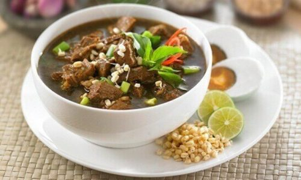

Local Foods
Local Food from Surabaya

Rawon is a traditional Indonesian beef soup from East Java that's known for its rich flavor and distinctive black color
Rawon

Lontong racing is a typical Surabaya food consisting of lontong, bean sprouts, fried tofu, lentho, fried onions, soy sauce and chili sauce.
Lontong Balap

Rujak cingur is one of many versions of Indonesian rujak, a fruit salad which consists of different tropical fruits, usually served with
a spicy and sweet dressing
Rujak Cingur